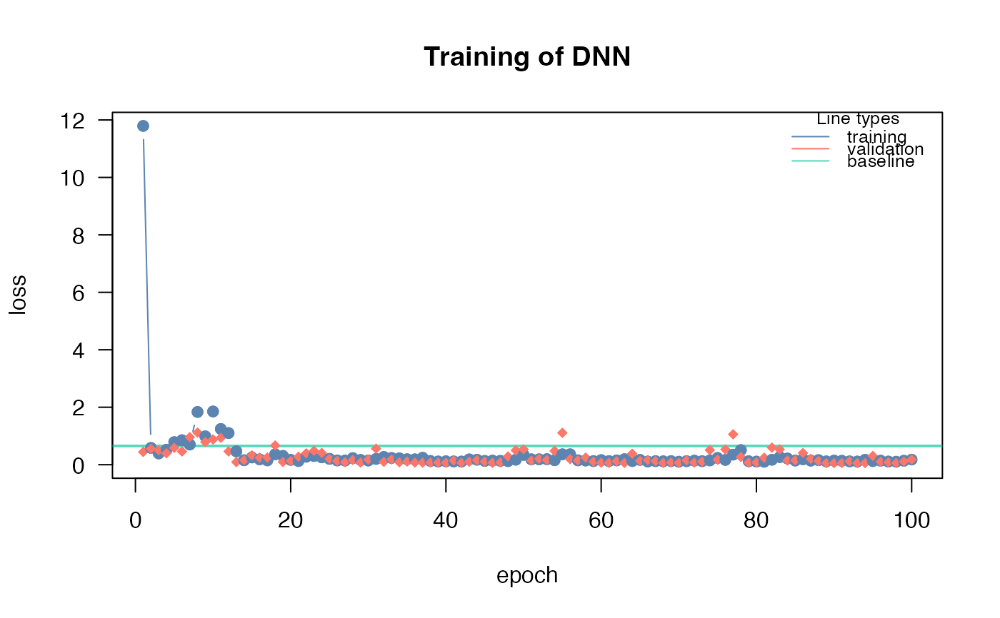

After training a model with cito, this function helps to analyze the training process and decide on best performing model. Creates a 'plotly' figure which allows to zoom in and out on training graph
Details
The baseline loss is the most important reference. If the model was not able to achieve a better (lower) loss than the baseline (which is the loss for a intercept only model), the model probably did not converge. Possible reasons include an improper learning rate, too few epochs, or too much regularization. See the ?dnn help or the vignette("B-Training_neural_networks").
Examples
# \donttest{
if(torch::torch_is_installed()){
library(cito)
set.seed(222)
validation_set<- sample(c(1:nrow(datasets::iris)),25)
# Build and train Network
nn.fit<- dnn(Sepal.Length~., data = datasets::iris[-validation_set,],validation = 0.1)
# show zoomable plot of training and validation losses
analyze_training(nn.fit)
# Use model on validation set
predictions <- predict(nn.fit, iris[validation_set,])
# Scatterplot
plot(iris[validation_set,]$Sepal.Length,predictions)
}
#> Loss at epoch 1: training: 5.229, validation: 0.604, lr: 0.01000

#> Loss at epoch 2: training: 0.481, validation: 1.757, lr: 0.01000
#> Loss at epoch 3: training: 0.400, validation: 0.367, lr: 0.01000
#> Loss at epoch 4: training: 0.211, validation: 0.591, lr: 0.01000
#> Loss at epoch 5: training: 0.213, validation: 0.209, lr: 0.01000
#> Loss at epoch 6: training: 0.254, validation: 0.507, lr: 0.01000
#> Loss at epoch 7: training: 0.277, validation: 0.323, lr: 0.01000
#> Loss at epoch 8: training: 0.168, validation: 0.267, lr: 0.01000
#> Loss at epoch 9: training: 0.148, validation: 0.391, lr: 0.01000
#> Loss at epoch 10: training: 0.162, validation: 0.253, lr: 0.01000
#> Loss at epoch 11: training: 0.338, validation: 0.161, lr: 0.01000
#> Loss at epoch 12: training: 0.174, validation: 0.265, lr: 0.01000
#> Loss at epoch 13: training: 0.154, validation: 0.142, lr: 0.01000
#> Loss at epoch 14: training: 0.314, validation: 0.404, lr: 0.01000
#> Loss at epoch 15: training: 0.142, validation: 0.120, lr: 0.01000
#> Loss at epoch 16: training: 0.197, validation: 1.106, lr: 0.01000
#> Loss at epoch 17: training: 0.183, validation: 0.329, lr: 0.01000
#> Loss at epoch 18: training: 0.381, validation: 0.173, lr: 0.01000
#> Loss at epoch 19: training: 0.248, validation: 0.200, lr: 0.01000
#> Loss at epoch 20: training: 0.147, validation: 0.151, lr: 0.01000
#> Loss at epoch 21: training: 0.317, validation: 0.106, lr: 0.01000
#> Loss at epoch 22: training: 0.154, validation: 0.189, lr: 0.01000
#> Loss at epoch 23: training: 0.162, validation: 0.192, lr: 0.01000
#> Loss at epoch 24: training: 0.187, validation: 0.107, lr: 0.01000
#> Loss at epoch 25: training: 0.177, validation: 0.592, lr: 0.01000
#> Loss at epoch 26: training: 0.270, validation: 0.107, lr: 0.01000
#> Loss at epoch 27: training: 0.342, validation: 0.636, lr: 0.01000
#> Loss at epoch 28: training: 0.194, validation: 0.362, lr: 0.01000
#> Loss at epoch 29: training: 0.170, validation: 0.123, lr: 0.01000
#> Loss at epoch 30: training: 0.278, validation: 0.692, lr: 0.01000
#> Loss at epoch 31: training: 0.282, validation: 0.161, lr: 0.01000
#> Loss at epoch 32: training: 0.155, validation: 0.112, lr: 0.01000
#> Loss at epoch 33: training: 0.129, validation: 0.129, lr: 0.01000
#> Loss at epoch 34: training: 0.146, validation: 0.412, lr: 0.01000
#> Loss at epoch 35: training: 0.194, validation: 0.222, lr: 0.01000
#> Loss at epoch 36: training: 0.141, validation: 0.254, lr: 0.01000
#> Loss at epoch 37: training: 0.183, validation: 0.190, lr: 0.01000
#> Loss at epoch 38: training: 0.194, validation: 0.160, lr: 0.01000
#> Loss at epoch 39: training: 0.152, validation: 0.558, lr: 0.01000
#> Loss at epoch 40: training: 0.149, validation: 0.090, lr: 0.01000
#> Loss at epoch 41: training: 0.149, validation: 0.181, lr: 0.01000
#> Loss at epoch 42: training: 0.155, validation: 0.274, lr: 0.01000
#> Loss at epoch 43: training: 0.171, validation: 1.030, lr: 0.01000
#> Loss at epoch 44: training: 0.182, validation: 0.156, lr: 0.01000
#> Loss at epoch 45: training: 0.186, validation: 0.090, lr: 0.01000
#> Loss at epoch 46: training: 0.159, validation: 0.462, lr: 0.01000
#> Loss at epoch 47: training: 0.175, validation: 0.210, lr: 0.01000
#> Loss at epoch 48: training: 0.149, validation: 0.096, lr: 0.01000
#> Loss at epoch 49: training: 0.172, validation: 0.654, lr: 0.01000
#> Loss at epoch 50: training: 0.337, validation: 0.358, lr: 0.01000
#> Loss at epoch 51: training: 0.174, validation: 0.087, lr: 0.01000
#> Loss at epoch 52: training: 0.224, validation: 0.094, lr: 0.01000
#> Loss at epoch 53: training: 0.145, validation: 0.098, lr: 0.01000
#> Loss at epoch 54: training: 0.160, validation: 0.390, lr: 0.01000
#> Loss at epoch 55: training: 0.129, validation: 0.112, lr: 0.01000
#> Loss at epoch 56: training: 0.122, validation: 0.103, lr: 0.01000
#> Loss at epoch 57: training: 0.115, validation: 0.131, lr: 0.01000
#> Loss at epoch 58: training: 0.309, validation: 0.206, lr: 0.01000
#> Loss at epoch 59: training: 0.129, validation: 0.223, lr: 0.01000
#> Loss at epoch 60: training: 0.225, validation: 0.086, lr: 0.01000
#> Loss at epoch 61: training: 0.143, validation: 0.135, lr: 0.01000
#> Loss at epoch 62: training: 0.147, validation: 0.172, lr: 0.01000
#> Loss at epoch 63: training: 0.140, validation: 0.093, lr: 0.01000
#> Loss at epoch 64: training: 0.153, validation: 0.108, lr: 0.01000
#> Loss at epoch 65: training: 0.122, validation: 0.176, lr: 0.01000
#> Loss at epoch 66: training: 0.163, validation: 0.093, lr: 0.01000
#> Loss at epoch 67: training: 0.112, validation: 0.086, lr: 0.01000
#> Loss at epoch 68: training: 0.159, validation: 0.267, lr: 0.01000
#> Loss at epoch 69: training: 0.277, validation: 0.494, lr: 0.01000
#> Loss at epoch 70: training: 0.177, validation: 0.944, lr: 0.01000
#> Loss at epoch 71: training: 0.240, validation: 0.350, lr: 0.01000
#> Loss at epoch 72: training: 0.133, validation: 0.083, lr: 0.01000
#> Loss at epoch 73: training: 0.147, validation: 0.093, lr: 0.01000
#> Loss at epoch 74: training: 0.170, validation: 0.279, lr: 0.01000
#> Loss at epoch 75: training: 0.149, validation: 0.109, lr: 0.01000
#> Loss at epoch 76: training: 0.156, validation: 0.079, lr: 0.01000
#> Loss at epoch 77: training: 0.178, validation: 0.887, lr: 0.01000
#> Loss at epoch 78: training: 0.231, validation: 0.264, lr: 0.01000
#> Loss at epoch 79: training: 0.115, validation: 0.076, lr: 0.01000
#> Loss at epoch 80: training: 0.121, validation: 0.136, lr: 0.01000
#> Loss at epoch 81: training: 0.124, validation: 0.105, lr: 0.01000
#> Loss at epoch 82: training: 0.115, validation: 0.405, lr: 0.01000
#> Loss at epoch 83: training: 0.128, validation: 0.133, lr: 0.01000
#> Loss at epoch 84: training: 0.115, validation: 0.186, lr: 0.01000
#> Loss at epoch 85: training: 0.142, validation: 0.103, lr: 0.01000
#> Loss at epoch 86: training: 0.110, validation: 0.078, lr: 0.01000
#> Loss at epoch 87: training: 0.184, validation: 0.518, lr: 0.01000
#> Loss at epoch 88: training: 0.220, validation: 0.081, lr: 0.01000
#> Loss at epoch 89: training: 0.143, validation: 0.103, lr: 0.01000
#> Loss at epoch 90: training: 0.163, validation: 0.216, lr: 0.01000
#> Loss at epoch 91: training: 0.193, validation: 0.077, lr: 0.01000
#> Loss at epoch 92: training: 0.143, validation: 0.076, lr: 0.01000
#> Loss at epoch 93: training: 0.121, validation: 0.231, lr: 0.01000
#> Loss at epoch 94: training: 0.131, validation: 0.331, lr: 0.01000
#> Loss at epoch 95: training: 0.119, validation: 0.089, lr: 0.01000
#> Loss at epoch 96: training: 0.253, validation: 0.092, lr: 0.01000
#> Loss at epoch 97: training: 0.103, validation: 0.157, lr: 0.01000
#> Loss at epoch 98: training: 0.183, validation: 0.515, lr: 0.01000
#> Loss at epoch 99: training: 0.180, validation: 0.151, lr: 0.01000
#> Loss at epoch 100: training: 0.125, validation: 0.072, lr: 0.01000
# }